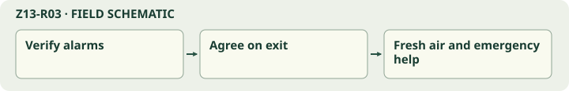

Z13-R03 · Home survival and utilities · Reconstruction draft
Check carbon monoxide alarms before an outage
Verify audible alarms and a family response before portable fuel equipment is needed.
Lineage · Preparedness primer reconstruction · Home Resilience
When it applies · Household outage preparation and suspected carbon monoxide exposure.
Equipment · CO alarms, exact manufacturer instructions and a household exit plan.

Actions
- Check whether there are CO alarms on each level and outside sleeping areas. Follow placement and maintenance instructions for each unit.[C09]
- Check the test and backup-power procedure. Identify the agreed outdoor meeting point and make it known to everyone in the household.[C09, T07, ED]
- If an alarm indicates carbon monoxide or exposure is suspected, get to fresh air immediately and contact emergency services.[C07]
Verify · The household knows the alarm sound, exit and where to call from outside.[C09, C07, ED]
Stop or change course · A working alarm does not make indoor generator or camp-stove use safe.[C05, C06, C09]
Evidence and editorial notes
- C05 · CPSC · Portable Heaters and Camping Equipment (current web edition)
- Section: Carbon monoxide poisoning from portable camping equipment · Conditions: Tents, campers, vehicles and other enclosed spaces
Support: Fuel-burning camping equipment can lead to fatal carbon monoxide buildup in enclosed spaces.
Limitations: High altitude increases incomplete combustion and CO production. · Conflicting evidence: None; aligns with CDC-CO and NPS guidance.
Editorial note: Hard-stop prohibition against indoor/vestibule/tent combustion. · Specialist reviewer: Carbon monoxide safety and emergency medicine
Primary source · checked 2026-11-24 - C06 · CPSC · CPSC Warns of Generator, Carbon Monoxide and Fire Hazards Ahead of Hurricane Season (2026 seasonal agency guidance)
- Section: Prevent CO poisoning > Portable generators · Conditions: Portable fuel-driven generator during an outage
Support: Use outdoors at least 20 feet from the home with exhaust directed away from buildings.
Limitations: Wind eddies, overhanging eaves, and open windows can still draw exhaust toward occupied structures. · Conflicting evidence: None; 20 ft is a minimum floor, not a guarantee in enclosed alleys.
Editorial note: Anchored numeric separation rule for portable generators only. · Specialist reviewer: Electrical and carbon monoxide safety
Primary source · checked 2026-11-24 - C07 · CPSC · Carbon Monoxide Fact Sheet (current web edition)
- Section: CO poisoning symptoms; what to do if suspected · Conditions: Suspected carbon monoxide exposure
Support: Escape to fresh air immediately and contact emergency services. Symptoms can include headache, dizziness, nausea and confusion.
Limitations: CO is colorless and odorless; symptoms mimic viral illness or altitude fatigue and can incapacitate sleepers without waking. · Conflicting evidence: None; aligns with CDC-CO.
Editorial note: Standard CO emergency stop condition across Z02 and Z03. · Specialist reviewer: Carbon monoxide safety and emergency medicine
Primary source · checked 2026-11-24 - C09 · CPSC · CO Alarms (current web edition)
- Section: Installing and maintaining CO alarms · Conditions: U.S. household CO prevention
Support: Install CO alarms on every level and outside sleeping areas. Follow placement and maintenance instructions.
Limitations: Alarms alert to buildup after release begins; they never make indoor fuel-burning appliances safe. · Conflicting evidence: None; complements C05 and C06.
Editorial note: Paired with exit-plan checks in household and shelter cards. · Specialist reviewer: Carbon monoxide safety
Primary source · checked 2026-11-24 - T07 · FEMA · Flood Hazard Information Sheet (agency PDF)
- Section: How to stay safe when a flood threatens; take an active role · Conditions: U.S. household flood preparedness and evacuation
Support: Prepare contacts, medication and supplies. Heed evacuation instructions and avoid flooded roads.
Limitations: Six inches of moving water can knock down an adult; shallow-looking crossings hide road washouts. · Conflicting evidence: None; aligns with NWS-FLOOD.
Editorial note: Supports flood turnaround and evacuation decision thresholds. · Specialist reviewer: Emergency management
Primary source · checked 2026-11-24
Source lineage · Preparedness primer reconstruction · Home Resilience · Classification · Reconstruction draft.